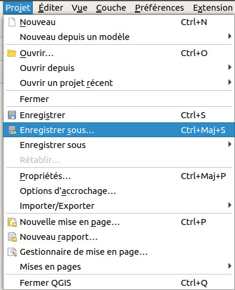

Présentation
En quelques mots
Ce tutoriel QGIS a été créé par le pôle Analyse et Représentation des données de l'UMR PASSAGES et est aujourd'hui maintenu par le RASTeR de l'UMR LETG. Son but est de permettre aux débutants en SIG de s'initier à ceux-ci via le logiciel libre QGIS. Pour installer QGIS, rendez-vous sur http://www.qgis.org/.
Le tutoriel est mis à jour pour chaque version maintenue « à long terme » de QGIS : actuellement il s'agit de la version 3.22 'Białowieża'.
Accès au tutoriel
Le tutoriel comporte 11 parties auxquelles vous pouvez accéder par le plan dans la partie droite de la page, ou bien via le plan détaillé.
Chaque partie peut être réalisée indépendamment des autres ; cependant, la progression présentée suit un ordre logique.
Si vous recherchez une notion précise, utilisez l'index.
Mode d'emploi
Manipulation
Tout au long du tutoriel, les parties décrivant des manipulations à effectuer dans QGIS sont différenciées par une bordure bleue et un fond bleu-gris :
Ceci décrit une manipulation à effectuer dans QGIS.
Les données nécessaires pour effectuer ces manipulations sont accessibles dans la rubrique téléchargement.
Aide
Quand une partie du texte apparaît soulignée en pointillés en bleu foncé, si vous passez la souris dessus, une image apparaît pour vous aider par exemple à trouver l'emplacement d'un menu ou d'un bouton dans QGIS.
Sauvegardez votre projet sous un nouveau nom : Menu Projet → Enregistrer sous... 
Question/réponse
Des questions vous seront posées tout au long du tutoriel ; les réponses sont visibles en cliquant sur le petit triangle devant la question.
Parce-que c'est une légende !
Liens
Les liens internes au tutoriel sont affichés en bleu, les liens externes sont en gris et s'ouvriront dans une nouvelle fenêtre ou onglet.
C'est parti !